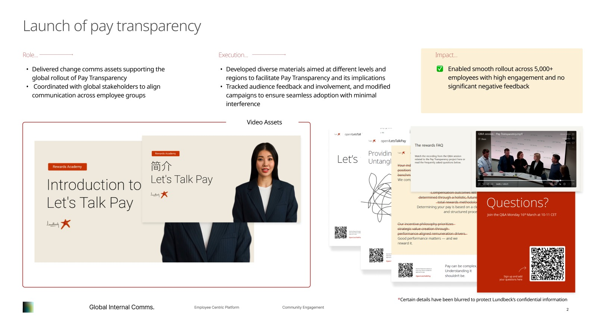
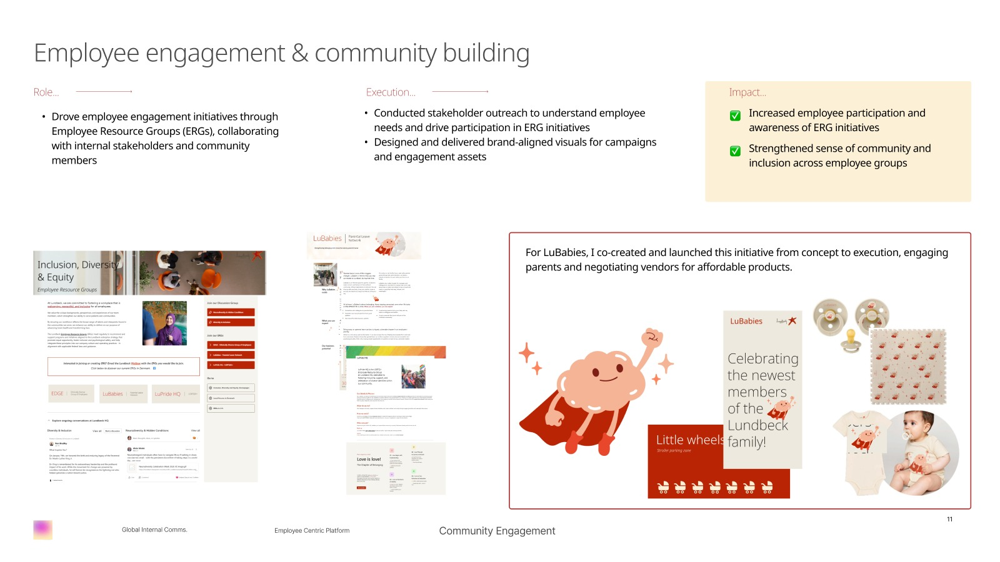
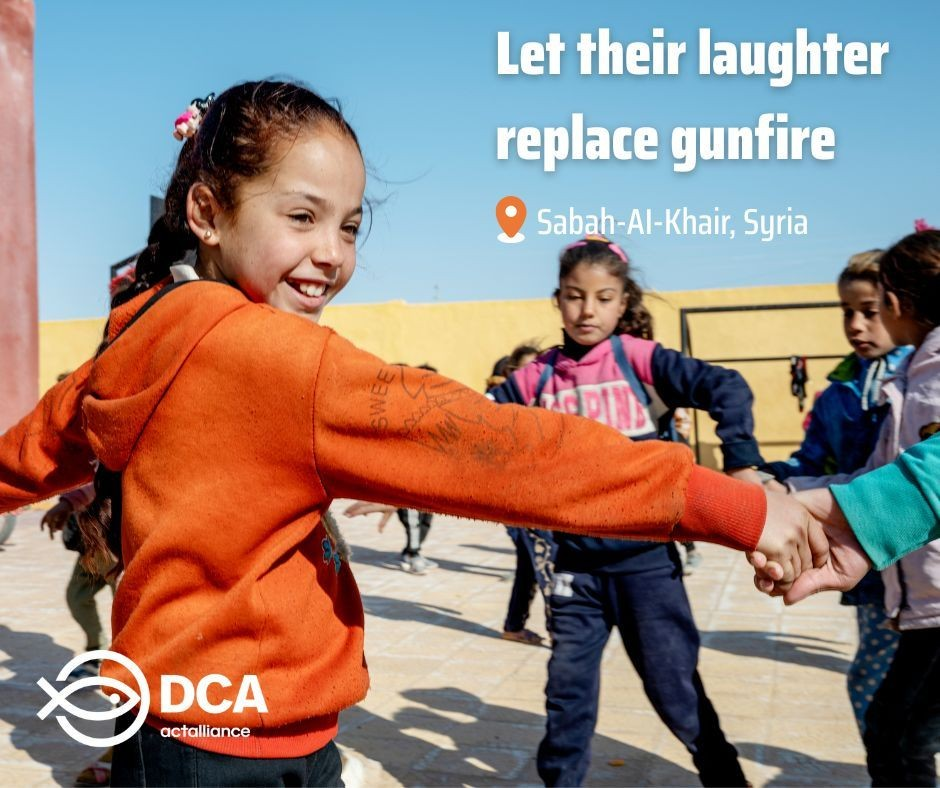
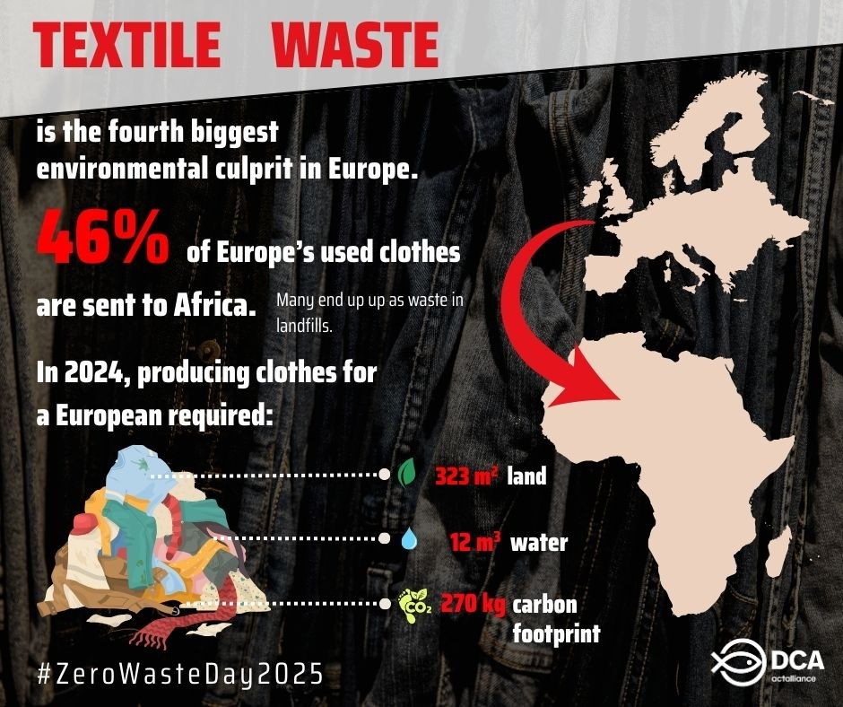
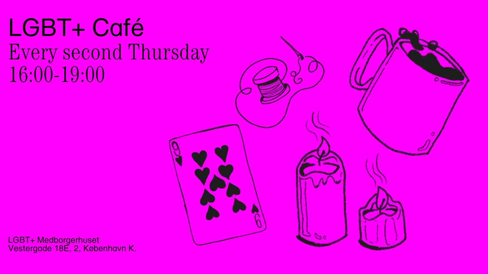
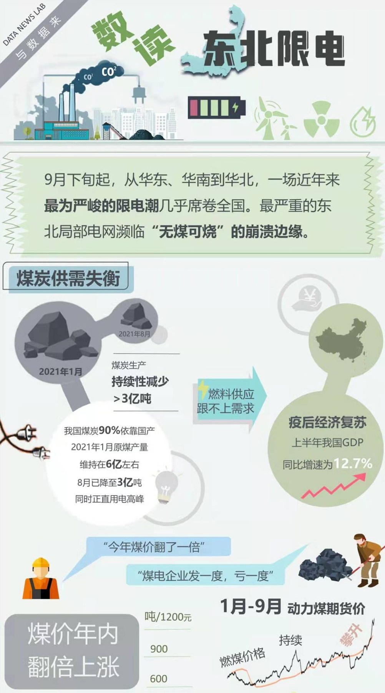
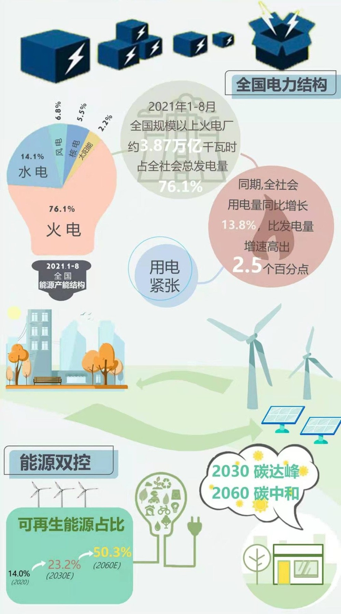

LUNDBECK / SELECTED DELIVERABLES把变化讲清楚。Make it human.


把企业文化变成可参与的体验
Lundbeck · 全球内部沟通、员工体验与社群活动
阅读案例STORIES THAT
BRING PEOPLE TOGETHER.
从跨国企业的员工沟通，到 NGO 的人文叙事，
我把受众洞察转化为看得懂、愿意参与的内容。
内容、渠道与体验相互连接。
这里是我在品牌传播和社群运营中的实践。


Lundbeck · 全球内部沟通、员工体验与社群活动
阅读案例

DanChurchAid · 官网叙事、社媒内容与视觉表达
阅读案例
COMMUNITY / COPENHAGEN社区活动与志愿协作 · 从主题共创到现场体验
阅读案例

能源议题 · 数据整理、视觉结构与信息图表达
阅读案例摄影记录一刻，研究追问原因。
它们也塑造了我理解受众的方式。
通过八次半结构化访谈与三个月参与式观察，研究中国酷儿移民如何借助交友应用理解跨文化生活、建立联系并协商身份。关注数字媒介如何嵌入日常经验。
结合批判话语分析与酷儿档案理论，研究社区生成的地图如何承载身份、迁移与地方记忆。探索数字档案中的可见性、社区连接与个人叙事。
参与研究后疫情时代城市退休老人的社交媒体使用，协同完成 50+ 样本访谈，使用 NVivo 整理与编码资料，参与产出万字研究报告。把研究训练带入受众洞察与内容策划。
我拥有哥本哈根大学认知传播硕士背景，曾在 Lundbeck 和 DanChurchAid 参与品牌传播、员工沟通与内容运营。研究让我从受众的日常经验出发，视觉创作让我把洞察变成可感知的表达。
我喜欢把内容放回具体的人和场景里：谁会读它，为什么需要它，又能通过它做些什么。也愿意在跨文化团队中，把策略、设计与执行连接起来。
浏览原始 Notion 作品集Lundbeck · 丹麦
雇主品牌、内部沟通与员工社群
DanChurchAid · 丹麦
社媒运营与品牌传播
哥本哈根大学
认知传播 · 硕士
黑龙江大学
传播学 · 学士
先理解受众
访谈、质化研究与内容表现复盘
再组织表达
社媒、专题网站、newsletter 与信息图
把想法落地
Figma、Canva、Adobe、视频制作与 AI 工作流
让协作更顺畅
跨文化沟通、社群共创与活动执行
在人道主义传播中，把遥远的议题变成可以理解、产生共鸣的故事。
DanChurchAid 的传播涵盖人道主义排雷、气候变化与难民支持，面向国际受众与合作伙伴，需要在不同渠道保持清晰、一致的品牌表达。
参与官网内容迭代、社媒策划与视觉创作，制作图文、短视频及信息图；结合社媒数据复盘内容表现，并支持 newsletter 与跨国团队协作。
把复杂变化讲清楚，把 HR 流程做得更易用，把员工参与变成真实的连接。
在全球化组织中，不同地区、层级与语言背景的员工需要理解同一套政策，也需要在入职、绩效和日常协作中找到与自己相关的信息。
围绕全球内部沟通、员工导向的 HR 流程、社群与活动三条主线，连接利益相关方、内容结构、视觉表达与本地化交付。
项目与成果依据个人 Lundbeck 作品集整理。
把复杂的政策与流程，转化为跨地区可理解、可复用的内容。
支持 Pay Transparency 的全球上线沟通，协调利益相关方，帮助不同员工群体理解政策及其影响。
根据层级和区域制作沟通材料与视频，跟踪受众反馈和参与情况，持续调整表达。作品包括 Let’s Talk Pay 视频、FAQ 与相关沟通物料。
支持面向 5,000+ 员工的上线。原作品集记录显示，上线过程中未出现显著负面反馈。
重构现有奖励内容与视觉框架，推动 Rewards & Analytics 与 Corporate Communications 的跨职能协作。
围绕奖励的核心价值统一信息与视觉结构，把复杂内容转化为员工容易理解的说明，并整理至 Rewards Academy 页面。
提升奖励信息的清晰度与一致性，帮助员工理解奖励、发展和绩效之间的关系。
将各地区薪酬指南组织到统一的全球平台，协同数据分析、企业传播和本地团队校验内容。
按区域整理内容，为本地指南建立标准模板，兼顾信息准确性、地区适用性及使用体验。
建立统一入口和可供区域适配的内容结构，支持全球团队查找与使用薪酬沟通材料。
维护跨职能、跨区域的集中式 HR 内容库，明确内容所有权与访问权限。
依照 Attract → Onboard → Develop → Offboard 员工生命周期组织资料；结合 SharePoint 与 Teams，设置版本管理和草稿流程。
提升材料的可访问性与透明度，通过结构化权限和版本控制减少重复资料及管理风险。
围绕入职、绩效和调研，让员工更容易找到信息并采取行动。
设计和交付入职沟通与学习材料，帮助新员工熟悉系统、流程和公司文化。
制作 onboarding guidebook，搭建 SharePoint 入职页面，并整理学习内容与 session 流程。
让入职信息更容易找到和理解，支持新员工更顺畅地融入组织。
为员工和经理简化、组织绩效管理沟通，协调利益相关方统一信息口径。
将 year-end review 流程转化为按受众区分的 one-pager，把相关工具与资源集中到统一页面。
支持七种语言的绩效沟通，让评审流程与相关资源更清楚、更容易使用。
支持全球员工敬业度调研传播，连接 Corporate Communications 与 PC&S，推动信息对齐与交付。
为不同员工群体制作符合全球品牌规范的视觉材料；协调本地化和校验，包括中文版本，并支持现场及数字渠道分发。
原作品集记录约 95% 的传播触达率，全球发布过程中未报告重大问题。这里的触达率不代表问卷完成率。
从需求沟通、视觉表达，到社群上线与现场执行。
通过 Employee Resource Groups（ERGs）推进员工参与，协同内部团队与社群成员了解需求。
为社群活动制作符合品牌规范的视觉材料；共同创立并上线 LuBabies，连接育儿员工，协调供应商并洽谈产品价格。
提升员工对社群项目的认知与参与，支持员工群体之间的归属感与包容体验。
围绕目标受众和传播目标，推进内部员工参与活动的全流程执行。
协调利益相关方、供应商与现场安排，跟进交付物、时间表和预算，并制作面向相关员工群体的内网宣传材料。
原作品集记录交付五项员工参与项目，ERG 成员增长 45%。该数字是社群成员增长，并非活动参与人数。
一场活动的价值，也在于陌生人能否放心地走进来，并愿意再来一次。
参与哥本哈根酷儿社区志愿团队，围绕开放麦、新成员交流与漫画工作坊等活动，创造包容、舒适的相遇空间。
协同共创活动主题、建立 Facebook 活动页、协调场地与现场体验，并参与双周 Café 的食物、咖啡及互动活动组织。
在这些实践中，我把内容运营理解为一种关系建设：宣传帮助人们找到活动，现场体验让连接真正发生。
查看 Queer Open Mic 活动页数据整理之后，还需要找到一种让人愿意读下去的表达。
围绕中国电力短缺与能源转型，整理能源机构数据和财新报道，观察“双碳”目标与实际执行之间的关系。
梳理素材与关键关系，使用 Canva 与 Illustrator 构建信息层级，将政策、趋势和实施挑战组织为一组视觉叙事。
这些作品展示的是研究与可视化过程，图表中的信息对应原项目的资料时间范围。